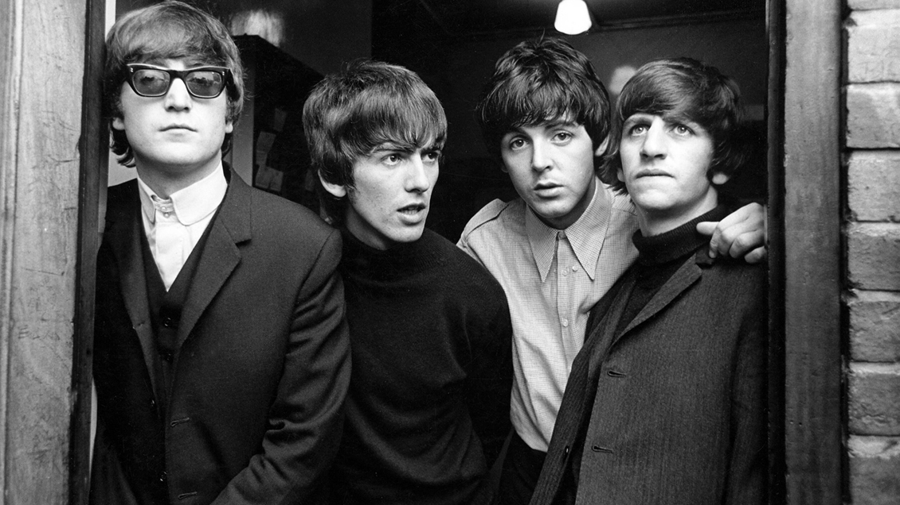

Pink Floyd

Pink Floyd fue un grupo de rock británico que cosechó gran popularidad gracias a su música psicodélica que,
con el paso del tiempo, fue evolucionando hacia el rock progresivo y el rock sinfónico.
Led Zeppelin
Led Zeppelin fue un grupo inglés de rock, considerado uno de los más importantes de ese género y uno de
los más populares durante la década de los setenta.
The Rolling Stones
The Rolling Stones es una banda británica de rock originaria de Londres. Son considerados una
de las más grandes e influyentes agrupaciones de la historia del rock, siendo la agrupación que sentó las bases del rock contemporáneo.
The Doors
The Doors fue una influyente banda de rock estadounidense, formado en Los Ángeles, que Se convirtió en los
máximos exponentes de la psicodelia de los años 60'.Descrita como "una de las bandas más innovadoras y poderosas en la historia del rock".
Guns N´ Roses

Guns N' Roses es una banda de hard rock estadounidense que se formó en Hollywood, Los Ángeles, California en 1985.
A finales de los años ochenta y principios de los noventa sacó una rebeldía hedonista y revivió la actitud punk impulsada por el hard rock.
AC/DC

AC/DC es una banda de hard rock formada en Sídney (Australia) en 1973 por los hermanos escoceses Malcolm y Angus Young.
Siempre nombrada como una de las mejores bandas de Heavy Metal de todos los tiempos
The Beatles

Grupo británico de música rock y pop, el más admirado y popular de la década de 1960 y uno de los más
influyentes en la historia de la música moderna.
Queen
Banda de rock británica que gozó de gran fama durante toda la década de los ochenta; la espectacularidad y
dinamismo de sus actuaciones y la asimilación al rock de tendencias jazzísticas, sinfónicas y operísticas
fueron algunas de las claves de su éxito.
Nirvana
Nirvana fue una banda de grunge estadounidense procedente de Aberdeen, Washington, Estados Unidos
integrada por el vocalista y guitarrista Kurt Cobain y el bajista Krist Novoselic en 1987
Pearl Jam
Pearl Jam es un grupo de grunge y rock alternativo formado en Seattle, Estados Unidos, en el año 1990.
Con la edición de su su álbum debut Ten en 1991, Pearl Jam irrumpiría con fuerza en el ámbito musical alternativo.
LP
Laura Pergollizi, conocida como LP artísticamente, cantante, musico, compositora y escritora,
sus discos estan enfocados en el Rock, Rock-pop e Indie.
The Who
The Who es una banda de garage rock que se formó el año 1963 en Londres, Inglaterra.
"la banda más ruidosa del mundo"
{kind=link}
{kind=link}
{kind=link}
{kind=link}
{kind=link}
{kind=link}
{kind=link}
{kind=link}
{kind=link}